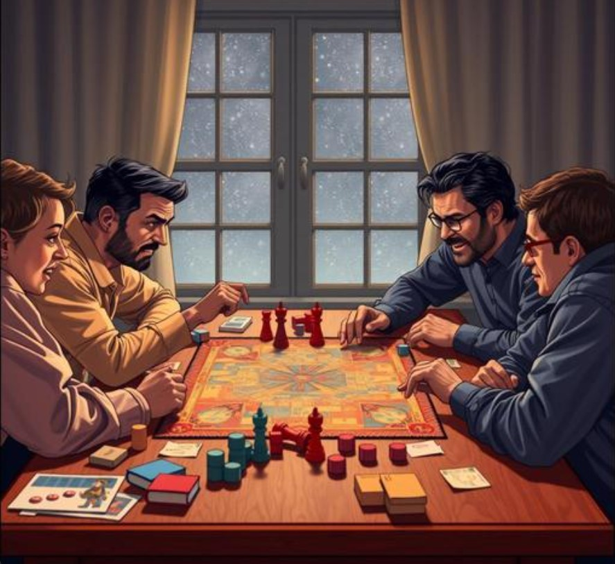

Every friend group has at least one game night that escalated far beyond what any board game's stakes should reasonably allow. Someone flipped the table, metaphorically or, in rare legendary cases, literally. Alliances formed and were betrayed within the same hour. Someone's still not fully over a Catan trade from three years ago, and will mention it, unprompted, at completely unrelated gatherings.

Why Board Games Bring Out This Specific Chaos
Game researchers studying competitive play note that low-stakes games paradoxically tend to produce disproportionately high emotional investment — precisely because there's nothing real on the line, people feel free to fully commit to the bit, the trash talk, and the strategic betrayal in a way they wouldn't with anything that actually mattered. The lack of real consequences is what makes the fake consequences feel so deliciously serious in the moment.
There's a social bonding function underneath the chaos too: shared competitive experiences, even (especially) ones that get a little unhinged, create exactly the kind of memorable, story-worthy moments that strengthen friend group identity over time. The friend group that still talks about "the Risk game" years later has a stronger shared mythology than one that's never had a game night escalate even slightly.
The Universal Board Game Night Hall of Fame Moments
- The trade that seemed fair in the moment and was definitely not fair
- The rule lawyer who's memorized the rulebook specifically to win arguments
- The alliance that lasted exactly until it stopped being convenient
- The game that ended with someone leaving the room, only to return ten minutes later, fully composed, ready to keep playing
Why These Nights Deserve Better Documentation Than a Group Chat Joke
These specific game-night legends get referenced constantly within a friend group and explained to nobody outside it — which means the actual details, retold purely from memory, drift further from accurate with every retelling (often making the story better, but less reliably true to what actually happened).
Immortalizing the Legendary Game Night
Some friend groups have started marking their most legendary game nights with a star on GalaxySpace, named after the specific incident — "The Catan Betrayal of 2024" — with the full, accurate story locked in before memory rewrites it any further.
You can create one here — considerably cheaper than the therapy bill from taking Monopoly that seriously.